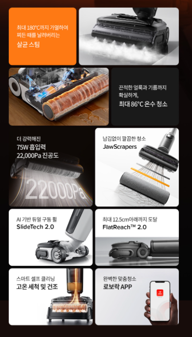
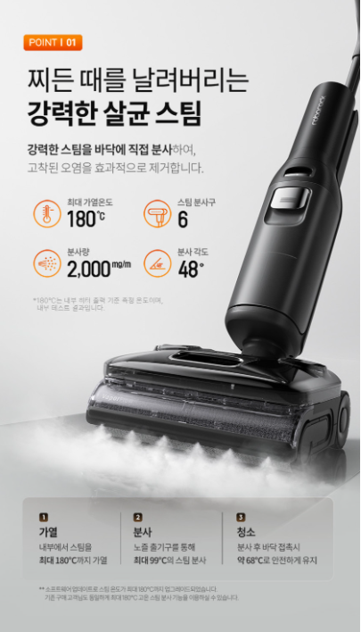

1. 로보락 F25 Ultra 스팀 진공 물걸레 청소기은 어떤 제품일까?
바닥의 먼지와 액체 오염을 흡입하면서 물걸레와 스팀 기능을 함께 활용하는 프리미엄 습건식 청소기입니다. 제품명만 보고 주문하기보다 사용할 공간과 바닥 환경, 정확한 구성품과 관리 방법을 함께 확인하는 것이 중요합니다.
2. 스팀 진공 물걸레의 특징
로보락 F25 Ultra는 마른 먼지와 젖은 오염을 흡입하면서 롤러 물걸레로 바닥을 닦고, 필요에 따라 스팀 기능을 활용하는 제품입니다. 주방 바닥의 끈적한 얼룩이나 식탁 주변의 생활 오염을 한 번에 관리하고 싶은 경우 고려할 수 있습니다.

3. 스팀 기능과 바닥재 주의
스팀은 고온의 수분을 이용하므로 오염을 불리는 데 도움이 될 수 있지만 모든 바닥에 적합한 것은 아닙니다. 원목마루, 코팅이 약한 바닥과 접착식 바닥재는 열과 수분에 영향을 받을 수 있으므로 바닥 제조사와 제품 설명서의 사용 가능 여부를 먼저 확인해야 합니다.
4. 흡입과 오수 분리
청소 중 흡입된 먼지와 액체는 오수통으로 모이므로 청소 후 바로 비우는 것이 좋습니다. 정수통에는 제조사가 허용한 물과 세제만 사용하고, 거품이 많은 일반 세제를 넣지 않아야 합니다. 오수통 필터와 센서 주변에 이물질이 쌓이면 알림이나 작동 오류가 발생할 수 있습니다.

5. 자동 세척과 롤러 건조
스테이션의 자동 세척 기능은 롤러와 내부 통로를 관리하는 데 도움을 주지만 완전한 무관리 기능은 아닙니다. 롤러 가장자리의 머리카락과 세척 트레이, 오수통은 정기적으로 직접 청소해야 합니다. 건조가 충분하지 않으면 냄새가 날 수 있으므로 건조 모드와 보관 환경을 확인하세요.
6. 조작성과 가구 아래 청소
습건식 청소기는 물통과 오수통 때문에 일반 무선청소기보다 무거울 수 있습니다. 전진 보조와 방향 전환이 부드러운지, 본체를 낮게 눕혀 침대나 소파 아래를 청소할 수 있는지 확인하세요. 계단을 오르내릴 때는 손잡이와 무게중심도 중요합니다.
7. 구매 전 체크리스트
- 판매 페이지의 정확한 모델명과 색상을 확인합니다.
- 사용할 바닥과 공간에 맞는 제품인지 확인합니다.
- 기본 구성품과 별도 구매 소모품을 확인합니다.
- 배터리 사용시간과 충전·거치 방식을 확인합니다.
- 물통, 먼지통, 필터와 롤러 관리 방법을 확인합니다.
- 세척과 건조 기능의 작동 범위를 확인합니다.
- 배송, 교환, 반품과 보증 조건을 확인합니다.
싸게살래 가전·디지털 목록에서 무선청소기와 로봇청소기 등 다양한 구매 가이드를 확인할 수 있습니다.
가전·디지털 전체 상품 보기 →자주 묻는 질문
구매 전에 가장 먼저 확인할 것은 무엇인가요?
정확한 모델명과 핵심 기능, 기본 구성품, 설치·보관 공간과 소모품 비용을 먼저 확인하는 것이 좋습니다.
자동 세척 기능이 있으면 직접 청소하지 않아도 되나요?
자동 세척은 롤러나 내부 통로 관리에 도움을 주지만 물통, 필터, 세척 트레이와 이물질은 정기적으로 직접 관리해야 합니다.
표시된 최대 사용시간만 보면 되나요?
최대 사용시간은 특정 모드를 기준으로 표시될 수 있습니다. 실제 사용시간은 흡입 단계, 물 분사와 브러시 구동 여부에 따라 달라질 수 있습니다.
일반 세제를 넣어도 되나요?
일반 세제는 거품과 내부 막힘을 유발할 수 있으므로 제조사가 허용한 전용 세제나 권장 방법을 따라야 합니다.